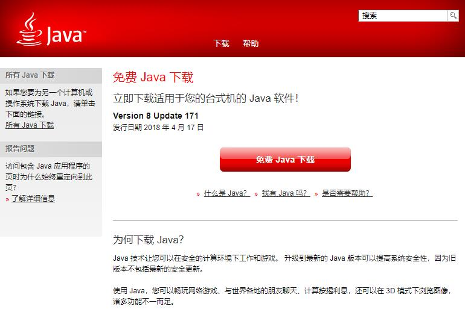
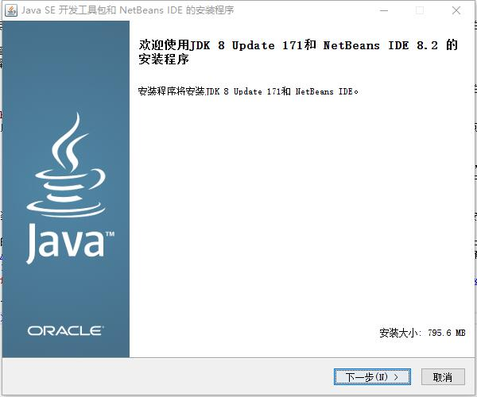
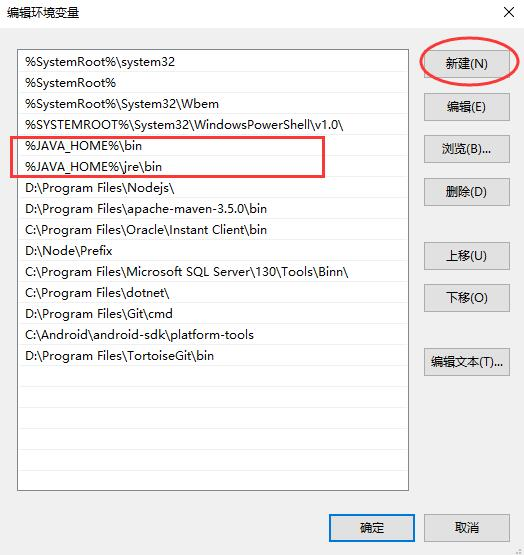
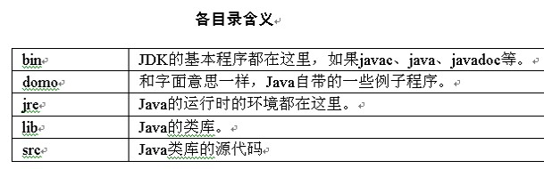
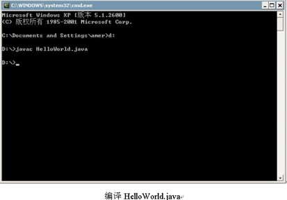
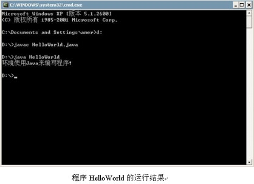

本章将要介绍Java的特点以及所应用的平台，然后带领同学们从第一步做起，来完成一个Java的小程序，通过这个小程序的完成，可以让同学们了解Java平台的搭建以及简单的开发步骤。通过本章的学习，同学们应该能够达到如下几个目标：这些是学习本章的目标，同时也是对同学们的基本要求。学好本章是学习以后知识的基础，同学们一定要熟练地掌握本章的知识。
- 熟练掌握如何搭建Java开发环境，包括下载、安装和配置JDK。
- 能够编写和编译Java程序，并能够运行生成文件。
1.1 Java的平台简介
Java语言在网络编程方面应用得很广，作为一个新的程序设计语言，它具有简单、多变、面向对象、不依赖操作系统的特点，具有很好的移植性和安全性，这些给网络编程带来了很多便利。Java的平台根据用途来区分，可以分为三个版本：
- Java SE —— Java Standard Edition，这是Java的标准版，主要用于桌面级的应用和数据库的开发。
- Java EE —— Java Enterprise Edition，这是Java的企业版，提供了企业级开发的各种技术，主要用于企业级开发，现在用的最多的也就是这个。
- Java ME —— Java Micro Edition，这个版本的Java主要用于嵌入式的和移动式的开发，最常用的就是手机应用软件的开发。
1.2 安装工具包
首先要进行Java JDK的安装，JDK就是提供Java服务的系统包。请根据操作系统来选择安装哪个版本的JDK。本节介绍如何安装和配置JDK的环境变量和一些常用命令。
1.2.1 下载JDK
Java的系统包为JDK，JDK的全称为Java Development Kit，可以根据不同的平台来下载不同的JDK，下面介绍在64位的Windows 10系统上，如何下载并完成配置的。
1.进入Oracle官方网站，点击“免费Java下载”，找到“查看所有Java”链接并点击，然后点击“下载JDK”。

2.点击连接下载：jdk-8u171-windows-x64.exe (338.65MB)
1.2.2 安装JDK
下载完成后，进行安装，下面介绍Windows下的JDK安装步骤。
1.安装JDK的开始界面
2.根据提示点击“下一步”

1.2.3 查看与设置环境变量
所谓环境变量是供系统内部使用的变量，是包含系统的当前系统用户的环境信息的字符串和软件的一个确定存放的路径，安装完JDK就必须配置环境变量，方法如下所述。
- 鼠标右击【计算机】或【此电脑】，在弹出的下拉菜单中，选择【属性】选项
- 在弹出的窗口中，点击【高级系统设置】
- 在弹出的【系统属性】窗口中，切换到【高级】选项卡，然后点击【环境变量】按钮，如下图所示
配置JAVA_HOME环境变量，先在【系统变量】下方中，找看看是否能够找到该变量名，如果没有的话点击【新建】按钮，新建一个变量，然后设置变量值，变量值为【JDK的实际安装路径】，比如【C:\java\jdk1.8.0_171】，则变量值填写该路径即可。
接下来配置CLASSPATH环境变量，在系统变量中找不到该变量名称，所以我们也要新建一个，变量值为“.;%JAVA_HOME%/lib/tools.jar”。
然后再配置path环境变量，该变量在变量系统中可以找到，因此我们直接双击该变量名，就会出现【编辑系统变量】窗口，然后点击新建，分别输入“%JAVA_HOME%\bin”和“%JAVA_HOME%\jre\bin”，如下图所示
1.2.4 JDK常用命令
在图中显示了JDK中的一部分命令，在本节来对这些命令进行必要的讲解。

-
javac的常用命令
-g:：生成调试信息。
-g:none：生成无调试信息。
-g:{lines,vars,source}：只生成部分调试信息。
-O：优化，可能增大类文件。
-nowarn：无警告。
-verbose：输出编译器信息。
-deprecation：输出不鼓励使用的API的程序路径。
-classpath + 路径：指定用户类文件的路径。
-sourcepath + 路径：指定输入源文件的路径。
-bootclasspath + 路径：覆盖自举类文件的路径。
-extdirs + 目录：覆盖扩展类的路径。
-d + 目录：指定输出类文件的路径。
-encoding + 编码：指定源文件中的字符集编码。
-target + 版本：生成虚拟机的类文件。 -
JDK的常用命令
native2ascii：将中文unicode码转换成ascii码的，-reverse参数可以将ascii码转换回来。
javap：将class反编译成Java bytecodes。
jdb：Java的debug工具。
jps：查看JVM进程信息用的。
keytool：生成keystore文件。
jar：可将多个文件合并为单个JAR文件，jar是个多用途的压缩工具，它基于ZIP和ZLIB压缩格式的。
javadoc：Javadoc解析Java源文件中的声明和文档注释，并产生相应的HTML页面，描述公有类、保护类、内部类、接口、构造函数、方法。在实现时，javadoc要求且依赖于Java编译器完成其工作。
1.2.5 Java各个目录含义
JDK安装完成后，在安装目录下会安装很多目录和文件。这里再对这些目录进行简单的介绍。分类及说明如表所示。
1.2.6 要善于使用JDK的帮助文件
JDK的帮助文件有在线版本和离线版本两种，可以从Java的官方网站上下载到最新的JDK帮助文件，帮助文件分为两种格式，有HTML格式和CHM格式。JDK的帮助文件使用很简单，只需要打开目录下的index.html即可。若想查找某个方法是怎么实现的，只需根据包的路径找到此方法就行了。本APP也提供有帮助文件（API文档）功能。
1.3 程序开发过程
安装好JDK及配置好环境变量以后，就可以进行Java程序的开发。因为Java是一种编译性语言，所以在程序开发过程方面是和其他语言有所不同的。要开发Java程序，要经过以下3个步骤：
- 创建一个源文件。Java源文件就是Java代码文件，以Java语言编写。Java源文件是纯文本文件，扩展名为“.java”。可以使用任何文本编辑器来创建和编辑源文件，本书使用Windows系统自带的记事本做为Java源文件的编辑器。
- 将源文件编译为一个.class文件。使用JDK所带的编译器工具javac.exe，它会读取源文件并将其文本编译为Java虚拟机能理解的指令，保存在以后缀.class结尾的文件中。包含在CLASS文件中的指令就是众所周知的字节码（bytecodes），它是与平台无关的二进制文件，执行时由解释器java.exe解释成本地机器码，边解释边执行。
- 运行程序。使用java解释器（java.exe）来解释执行java应用程序的字节码文件（.class文件），通过使用Java虚拟机来运行Java应用程序。
1.4 编码规范
编写Java程序是要按照Java编码规范来进行编写的。一个程序不按照编码规范可能也是能够运行的，但是不按照编码规范编写的程序不是一个好程序，这种程序不易于程序的查看和维护。
编码规范包括很多内容，例如代码的编写规则，命名规则，代码注释等多项内容。命名规范和代码注释将在下一章中结合数据类型进行讲解。在本节中主要讲解一下代码的编写规则。
代码必须有缩进，缩进可以使用Tab键，或者四个空格。因为4个空格在eclipse中默认作为一个Tab缩进单位。
每行代码不要超过80个字符，这是由于很多编写工具不能对超过80个字符的内容进行很好的解释。
当代码在一行中放不下时，应进行换行。但是换行不能自动换行，而是按照级别来进行换行，并且同级别对齐。
1.5 HelloWorld：第一个Java程序
JDK安装完毕，环境变量也配置完毕后，下面开始编写第一个Java程序，以及讲解编译和运行程序的方法。
1.5.1 编写程序代码
打开文本文件编辑器，如Windows的记事本，也可使用更高级的编写工具。如EditPlus、Eclipse、JBulder、NetBeans、IDEA等，这些工具具有更加强大的功能，但现在不推荐使用，不利于初学者打下良好的基础。在记事本里添加如下代码。该代码可以直接复制到记事本中，当然如果自己输入是最好的。
public class HelloWorld
{
//类的主入口函数
public static void main(String args[])
{
//System.out.println为打印语句，用来显示结果
System.out.println("欢迎使用Java来编写程序!");
}
}
1.5.2 编译程序代码并运行
编写完Java程序的源代码就可以对该程序进行编译，编译Java程序的源代码的方法有如下几个步骤
 1.5.3 注意事项
- 在编写、编译和运行Java程序时是有很多注意点的，这也是初学者需要注意的地方。
- 在运行时如果提示“java.lang.NoClassDefFoundError”的话，请查找环境变量是否设置正确。
- 在命令提示符下输入命令的时候要注意区分大小写，Java是区分大小写的。
- 用javac编译程序时是有扩展名的。
- 用java运行程序时是没有扩展名的。
- 源程序里要有main方法。
- 源程序里的类名要和文件名相同，包括大小写。
1.6 使用Eclipse集成开发工具开发
Eclipse是目前最流行的Java开发工具，在Eclipse中集成了许多工具和插件，从而使Java的开发更容易。Eclipse是一个可以免费使用的软件，可以从Eclipse的官方网站http://www.eclipse.org上下载。解压缩就可以使用，直接下载的Eclipse是英文版，可以下载中文语言包NLpack1-eclipse-SDK-3.2.1-win32.zip从而完成中文版Eclipse的安装。
下载和安装Eclipse后，就可以使用该集成工具了，双击eclipse.exe文件就可以运行Eclipse。由于篇幅原因，这里读者可以自己熟练一下Ecliopse界面内容。这里主要来讲解如何在Eclipse中进行第一个HelloWorld程序开发。开发步骤如下所示。
- 打开Eclipse，选择菜单栏“文件”，再选择级联菜单“新建”，最后选择子菜单“项目”，在弹出的对话框中选择Java项目，并单击按钮“下一步”。
- 输入项目名称，例如：FirstProject；在“内容”选项卡中选择“从现有资源创建项目（X）”，然后在目录中找到前面HelloWorld.java的路径。单击“完成”按钮完成项目的创建。
- 在“包资源管理器”中单击右键，弹出邮件菜单，选择“新建”->“包”菜单，在弹出对话框的“名称（N）”文本框中输入包名，这里输入FirstBao。
- 打开Java编写界面，输入HelloWorld程序。单击运行按钮，就会在下面的控制台窗口中输出“HelloWorld”内容。这样一个Java程序就在Eclipse工具中编写、编译和运行完成。
1.7 综合练习
编写一个输出“我终于会Java了”的程序。
//Java21提示：参考本章中编写的第一个Java程序来进行编写。
public class LianXi1
{
public static void main(String args[])
{
System.out.println("我终于会Java了");
}
}
1.8 小结
本章介绍了Java的各种平台，以及如何下载、安装JDK，设置环境变量等。这些是编写Java程序的基本，并通过一个小例子说明是如何编写Java程序的。在本章中学习中，将重点学习如下几点。
JDK的安装与配置。
如何编写、编译和运行Java程序。
21天学通Java已开通基础教程的评论功能，有任何疑问都可以在下方评论哦！